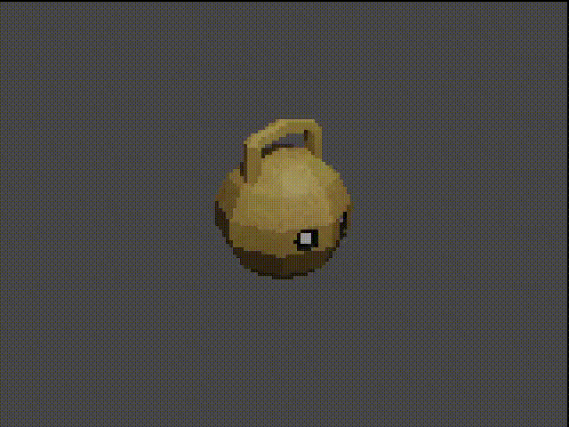
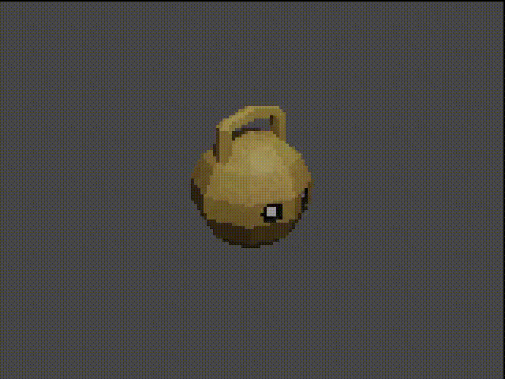

Projeto Sino
<p> Esse projeto atualmente está em fase criativa, eu ainda estou escrevendo a história do mundo e fazendo o design dos personagens, porém em alguns dias já entrarei em fase de desenvolviemnto com a Unreal Engine usando programação com C++.
O jogo vai ser um rpg de ação em terceira pessoa com câmera fixa com gráficos estilizados estilo ps1/n64. Alguns dos jogos que eu usei de referência são Undertale (estilo de história), Dark souls (estilo dark fantasy com rpg de ação), Divinity Original Sin (estilo de diálogo com opções extra baseadas em atributos)
A história do jogo atualmente começa com o protagonista (um esqueleto sem nome/sexo) aparecendo misteriosamente no meio de um ritual feito por uma senhora (atualmente sem nome). Essa senhora vai introduzir o protagonista a história básica da ilha que ele apareceu.
Essa ilha possui um tipo de maldição em forma de domo que a cobre de norte a sul, todos que tentam sair do domo são parados por uma parede translúcida de cor púrpura, e todos que entram na ilha não conseguem voltar.
Um som bem baixo de badalar de sino que ecoa por toda a ilha como um coração batendo pode ser escutado por aqueles que não estejam com as cabeças envoltas por cobre, latão, bronze e prata. Pessoas que ficam em contato com o badalar por alguns segundos começarão a sentir dores intensas na cabeça, seguido de sangramentos nos olhos, boca nariz e ouvidos. Após algum tempo, os efeitos levarão a lesões cerebrais sérias seguido de óbito.
O jogo em geral vai ter como tema sinos e fantasia, o personagem vão andar por pequenos vilarejos e ruínas de cidades e templos para conversar com os moradores da ilha.</p>
 
